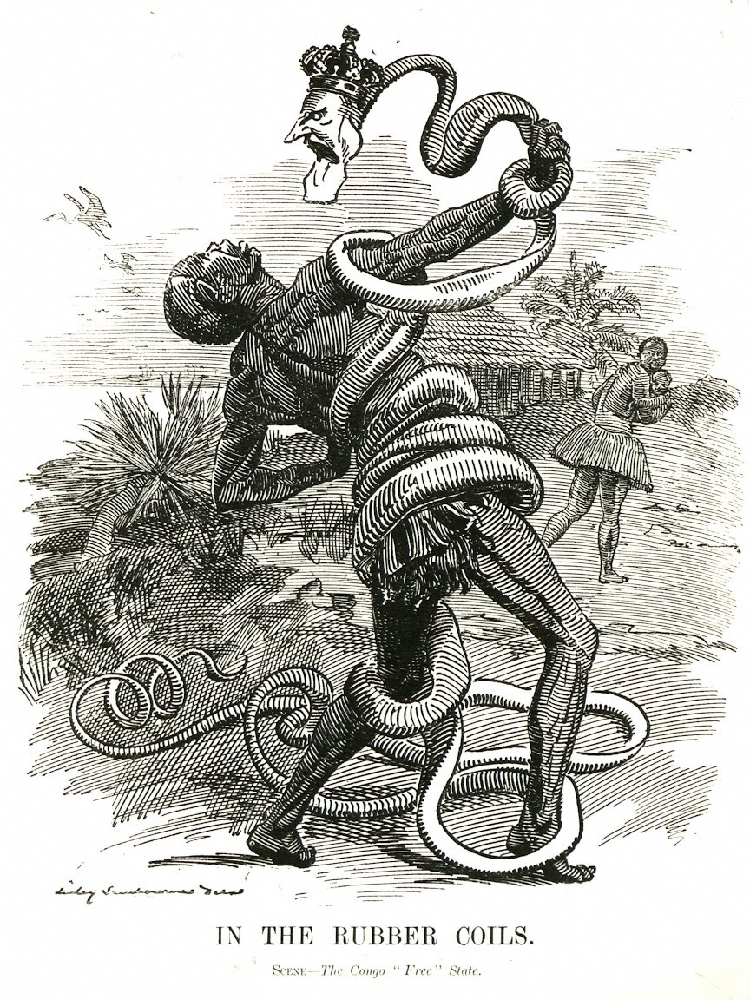

How the plunder of the Democratic Republic of Congo powers the world.
Cobalt is a key component in Lithium-ion batteries
Today, Li-ion batteries power all of consumer electronics such as electric cars and mobile phones.
Li-ion batteries work by moving Lithium ions between a cathode and an anode
When the battery is charging, the ions move from positive to negative...
An energy-dense and stable element, cobalt allows these batteries to be stable and portable.
Cobalt's compatibility with modern electronics stems from its unique properties...
Today much of the world's cobalt comes from the Democratic Republic of Congo
A mineral rich region that has supported new technologies for the last 100 years at a very high human cost.
The DRC is one of the richest countries in terms of mineral wealth and its abundance has supported the world's technological developments for the last 100 years.
When King Leopold II began Belgium's brutal reign of the regions near the basin of the Congo River in 1885, he did so to control the region's supply of ivory and rubber.
An inhumane regime of forced labour imposed by the Belgians in the region meant that by 1903, the "Congo Free State" was the largest supplier of rubber in the world, providing 5.9 thousand metric tons of rubber, just in time to support the European demand for automobile and bicycle tires.

King Leopold's cruelty shocked even his contemporaries, as highlighted by this political cartoon of the era depicting King Leopold as snake attacking a rubber collector. Source: Wikipedia Commons
Though prices of rubber eventually fell due to competition from the Asian colonies, the discovery of DRC's mineral wealth by the Belgians ensured that European interest in the region would continue.
Gold, Silver, and Diamond deposits in the region enriched the coffers of Belgium and England. Following the devastation of the First World War, European powers were keenly aware of the importance of DRC's wealth in their economic recovery, as highlighted by Louis Frank, the Belgian Minister of the Colonies in 1924:
"The valuable deposits are worked to their best economical possibilities, and with due care for the native population...The Congo has enormous potential wealth. It has a great future. It certainly add a splendid asset to the possessions and credit of Belgium."
From the first cars to the first telegraph wires, new technology always brought new mineral interests to the DRC.
With growing electrification increasing the demand for copper wiring, Copper became the country's leading export. Today, the DRC is the second largest producer of Copper, behind Chile.
The DRC has been present at the periphery in almost every significant event of the 20th century—when the mushroom cloud fell on Hiroshima killing a hundred and forty thousand civilians, it did so thanks to Congolese uranium.
The mine of Shinkolobwe provided uranium ores of such high grade for the nuclear age that it was called "a freak occurrence in nature" by Colonel Nichols, an officer assigned to the Manhattan project.
For the next half century, access to this mine became a question of key geopolitical importance for anyone looking to establish their nuclear program while the local Congolese miners dealt with the effects of radioactive exposure.
Most of this mineral wealth is found in the south-east region of DRC known as Katanga
Alongside copper, gold, silver, and uranium Katanga also had deposits of tin, germanium, radium, zinc, lithium, cadmium, and manganese.
It is hence not surprising that control over Katanga remains a priority for politicians, militias, international conglomerates, and secret service agencies.
When Patrice Lumumba, DRC's first democratically elected leader, challenged Western mining interests, the mineral-rich province of Katanga was pushed into secession.
Subsequently, when Lumumba was overthrown in a US and Belgium backed coup, he was handed over to Belgian militias and Katangan secessionists in Elizabethville (today Lubumbashi) to be violently tortured and executed. The UN Peace keeping force stationed in the region alongside western media outlets just watched.
Today, Katanga again finds itself as an integral part of the global supply chain thanks to its large and abundant deposits of cobalt.
Somewhere around 30% of the world's total cobalt supply lies in this region, at depths so shallow that is can be extracted by anyone with a shovel.
While large industrial sites run by Congolese and Chinese partnership dominate Katanga's formal mining sector, the region is also home to countless smaller, illegal, "artisanal mines".
It is in these "artisanal" mines where most of Katanga's men, women, and children work in extreme conditions, breathing toxic cobalt dust to provide the essential ingredient for the renewable transformation.
Though big tech companies claim to avoid artisanal mines in their cobalt sourcing, in practice, all artisanal cobalt gets integrated to the "formal" supply chain via intermediaries.
Claims of independent audits by big tech company ring false—in a country where the last census was done in 1984, it is difficult to even obtain population estimates let alone a complete inventory of "artisanal" mines. As a result, it is impossible to have any cobalt exported from the DRC that is "ethically sourced".
Once the intermediaries have sold the artisanal cobalt ore to wholesale sellers, they undergo a first step processing in local industrial factories.
Cobalt processing factories operate under no environmental legislation and as a result often dump toxic by-products indiscriminately. Villagers living in the copper belts of Zambia and DRC often drink the water from polluted streams, and breathe toxic dust with 1000 times higher impurities than recommended by WHO.
Despite producing one of the most essential components for electrification, DRC does not have enough electricity to process its minerals in large scale. Only 19% of the country is electrified with rural areas lagging significantly behind at 2% electrification.
Lack of infrastructure in the DRC means that most of the actual cobalt refinement is done in facilities of the Developed World.
Around 65% of current cobalt refinement (mostly sourced from DRC) is done in China followed by Finland (11%) Belgium (5%) and Canada (5%). The few refinement facilities in DRC do not produce cobalt of sufficient high quality for industrial use and needs to be further processed abroad.
Cobalt's supply chain ends in factories that manufacture the electric goods that power our lives
From Asia to Europe to the US, cobalt from the DRC is used in Lithium-Ion batteries that are essential for all electric goods from cars to phones.
And with that, the Congolese people once again keep the world's newest technology running at the cost of their exploitation, as they have for the last 100 years.
Sources and Acknowledgement
Geographic data about the steps in the cobalt supply chain is available thanks to the work of Resource Matters. Their work highlight the links in the global cobalt supply chain and is incredibly important towards raising awareness. We encourage all our readers to explore their full visualization here.
Cobalt Intro: Morris, C. (2020, February 11). Understanding the role of cobalt in batteries. Design News. https://www.designnews.com/electronics/understanding-the-role-of-cobalt-in-batteries
Slide 1: Loffman, R. (2023, February 22). Rubber Production in Africa. Oxford Research Encyclopedia of African History.
Slide 2 Quote Source: Franck, L. (1924). RECENT DEVELOPMENTS IN THE BELGIAN CONGO. Journal of the Royal Society of Arts, 72(3745), 711–724. http://www.jstor.org/stable/41356728
Slide 2 Data Source: Padilla, A. D., Otarod, Donya (Contractor), Deloach-Overton, S. W., Kemna, Ryan (Contractor) F, Freeman, P. A., Wolfe, Erica (Contractor) R, Bird, Laurence (Contractor) R, Gulley, A. L., Trippi, M. H., Dicken, C., Hammarstrom, J. M., & Brioche, A. S. (2021). Compilation of Geospatial Data (GIS) for the Mineral Industries and Related Infrastructure of Africa [Data set]. U.S. Geological Survey. https://doi.org/10.5066/P97EQWXP
Slide 3: Aquino A. Njini Felix. (2024, March 22). Congo overtakes Peru in copper output, still behind in exports. Reuters. https://www.reuters.com/markets/commodities/congo-overtakes-peru-copper-output-still-behind-exports-2024-03-22/
Slide 4: Mund, K. (2023, July 25). The dark history Oppenheimer didn't show. Wired. https://www.wired.com/story/the-dark-history-oppenheimer-didnt-show/
Slide 6: Reid, S. A. (2023, November 6). The Lumumba plot: The secret history of the CIA and a Cold War assassination. The New Yorker. https://www.newyorker.com/magazine/2023/11/06/the-lumumba-plot-the-secret-history-of-the-cia-and-a-cold-war-assassination
Slide 7: Kara, S. (2023). Cobalt red: how the blood of the Congo powers our lives. First edition. New York, St. Martin's Press.
Slide 8: Ghimire, S. (June 20, 2024). Africa's largest mini-grid to provide affordable and sustainable electricity in DRC. MIGA. https://www.miga.org/story/africas-largest-mini-grid-provide-affordable-and-sustainable-electricity-drc
Slide 9: The Faraday Institution. (2023, January). Faraday Insights #7: The role of batteries in the energy transition. The Faraday Institution. https://www.faraday.ac.uk/wp-content/uploads/2023/01/Faraday_Insights_7_Jan23_Final.pdf